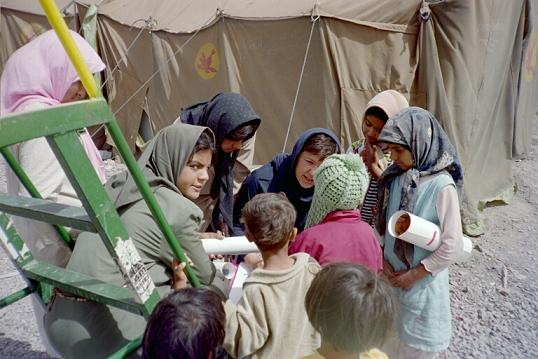
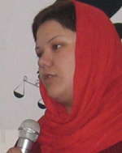

درب اپارتمان باز شدو دو خانم جوان به استقبال من امدند.کارگاه نوشتن بود و خیلی زود مشخص شد چه کسی اموزش می دهد.دختری زیر 25 سال سفید روبا موهای کوتاه مشکی همراه با لحنی مهربان ولی قاطع نکاتی رابه ما اموزش می داد.
طریقه درست نوشتن:تیتر-سوژه-نقل قول-طنز .......... ؛نوشته های نوشین احمدی خراسانی و زارا امجدی ومازیار سمیعی را بررسی ونکات قوت آنهارا به ما آموزش داد.از اموزش مقاله نویسی ژیلا بنی یعقوب برایمان مثالهایی اورد وراهکارهای زیادی برای جمع اوری امضا یادمان داد.(سن او کم ولی تجربه اش زیاد بود)
سپس از ما خواست متنی کوتاه بنویسیم .آنچنان پرشور در مورد نکات مثبت متن ما صحبت می کرد که ذوق زدگی خود را به ما منتقل و شور نوشتن را شیرین کرد. هرچه به پایان ساعت اول کارگاه نزدیک می شدیم خون در رگهایم پرحرارت تر می شد. با اینکه اولین باری بود که می دیدمش اما اورا می شناختم و یک سالی است که عکسهایش را روی کامپیوترم حفظ کرده ام .
ایا این پوست زیبا وپرطراوت همان است که روی اسفالتهای میدان هفت تیر کشانده می شد؟این دختر ارام همان است که به جرم اخلال در امنیت ملی محکوم شده؟ اویی که خصوصیت بارزش آرامش وملایمت بود؟
دلآرام، خیلی سریع در قلب من یک سوییت زیبا با دکوراسیون صورتی برای خود اختصاص داد.زمانی که اورا ترک می کردم حس کردم دوستانی قدیمی هستیم.شماره تلفن و ایمیلش را به من داد و قول گرفت که ارتباطمان قطع نشود.ولی چگونه؟
مگر در اوین کامپیوتروتلفن در اختیار او می گذارند؟او که اختلاسهای میلیاردی نکرده که سلولش مثل هتل باشد ومرتب به مرخصی برود.
دوروز پیش دو نفر که از بانکهای دولتی کلاهبرداریهای چند میلیاردی کرده بودند به دوسال حبس قابل تبدیل به جریمه محکوم شدند(بدون شلاق)اما نو عروس ساده ما که گزندی به کسی نرسانده و با مسالمت آمزتیرن روش درد و ارنج خود و زنان وطنش را فریاد کرده، به دوسال و شش ماه حبس و تحمل ده ضربه شلاق محکوم است و شجاعانه به اوین می رود تا ماه عسل را به تنهایی در حصار دیوارهای زندان بگذراند.
وقتی که فکرش را می کنم که دختری بخاطر طلب کردن حقوق نقض شده خود ومن وتو ؛ باید دو سال و شش ماه حبس و ده ضربه شلاق بربدن معصوم و بی گناه او وارد شود احساس می کنم دیگر امنیتی وجود ندارد.
او آارام و پر غرور و با گام هایی پرقدرت به سمت اوین می رود ومن در این فکرم که چه کسی امنیت مارا به خطر می اندازد؟
ده ضربه که چیزی نیست، بزنید تا دل آتش گرفته تان خنک شود، دخترک را، دلارام را. که جرمش و تنها جرمش این است که نمی خواهد اسیر بماند. نه اسیر خانه، نه اسیر خانه خدائی که امثال شما باشد، نه اسیر نامهربانانی که به بندگی خدای رحمان مدعی اند. بزنیدش به نام نامی انسان، به نام نامی عشق، به نام نامی زن. اما نام از خدای رحمن و رحیم نبرید. که این ضربه ها پذیرنده اش را پاک نمی کند چرا که گناهی نکرده است او، اما بر گناهان شما می افزاید و بر دردتان از این ستمرانی.
شنبه وقتی به زندان رفت، انگار دلارام منصورست. همان که دار از نام او بلند آوازه شد. همان حکایت است و جز این نیست. قرن هاست که با ما می آید. درمانده از اداره خویشیم، نسق کشیدن و ظلم تنها حربه ای است که برای حکمرانی می ماند. و در این هنگام به شاخه ای که به قفس بیگانگان فرومی برید، به هیاهوئی و بانگ فغانی که از آن شاخه بر می خیزد، باورنان می شود که بی لیاقتی ها نادیده می ماند و ظلم ها عفو می شود. باورتان می شود که می شود هر خواست کرد. در آن هنگامه اسب تاخت و ظلم را با چاشنی تهدبد بیگانه زینت بست و به حساب دفاع از وطن و مصلحت مردم گذاشت. اما دیری است این ورد هم بی اثرست و دلی را نمی گشاید مگر سادگانی که روز به روز تعدادشان کمتر می شود.
دلارام مگر چه کرده است جز آن که از نره معذور عذری نخواسته، به او التماسی نکرده که دستش را می کشید بر زمين. تا نترسد داد کشیده، رفته شکایت کرد، دل به عدالتی سپرده که اینک از او دریغ می شود. گوشه چارقد به دندان نگرفته، تا مانند هزاران هم جنس خود کتک بخورد و دم بر نیاورد. اما شما زن ایرانی را چنان نمی پسندید. او را از متجاوز هم فرمانبر می خواهید و البته بی صدا. این تصویری است که از زن ایرانی می پسندید. دلارام چنین نیست. و دلارام هزاران است، از اندازه زندان ها بیرون. و خودکامگان، کوچک و بزرگ، این را چه دیر در می یابند.
دلارام اگر یادتان باشد مدرسه می رفت هنوز که به قانون ضدزنتان معترض شد. هنوز از دبیرستان به درنیامده بود که گوشه ای از رحمتتان دید. ندیده نیست که. اما شما ندیده ببنید. در چشم دخترانتان خشم را نظاره کنید. رو پنهان نکنید. اگر دل دارید به خانه که رفتید به آن ها بگوئید من بودم که دلارام را روی زمین کشیدم، من بودم که در زندان یک دوای ضد درد از دست شکسته او دریغ داشتم. من بودم که شکایتش نپذیرفتم. من حافظ قانون دلاور بودم، من قاضی برحق بودم که به او حکم زندان و شلاق دادم. بگوئید تا سیلی خشم دختران و زنان و مادرانتان بر گونه ای جاری شود. که از هزار شلاق دردناک ترست.
هیچتان کس نگفته است که ظلم آن است که آدمی با منقد و مخالف خود می کند وگرنه همه برای هواداران و متملقان صله ها نهان دارند. وگرنه همه، دستبوسان را خالص و عین خلوص می بینند. وگرنه هر که تو بینی ستمگری داند.
نوارهای فیلم و صدا، و سندهای بیست و هشت سال پیش را بشنوید. جمع شده تا کس نشنود که چه وعده داده شد به خود و به مردمی که عطش آزادی داشتند، از شهرهای آبادان و زندان های ویران، تا خانه و آب و نان رایگان. و اينک به خشم کس از شما سزاوارتر نیست. که چون راست نباشند، خدا هم سربلندی شان نخواهد خواست. پس ناگزیر پنهان شد آن همه یادگاران، وعده ها، تا شرم پوشانده شود. شاید نسلی برسد که این همه نداند، چیزی نخواهد. اما دلارام ها آمدند که آن همه ندیده و نشینده بودند. و دیدید که اینان را نیز آرام نتوانستید کرد که گفته اند از فریب آرامش برنیامد.
شنبه روزی دلارام قرارست به زندان برود. چه خوب. او نخواسته قهرمان اساطیری و مظهر ایستادگی زن جوان ایرانی می شود. اهورائی. از نژاد همان ها که سوخته اند تا مردمی ساخته شوند. از تبار همان ها که به جان، از تن خود، هیمه ای برای آتش غضب ستمکارگان ساخته اند. و سیاووش وار پاک و مطمئن بدان آتش پا نهاده اند.
دلارام همان است که دخترکان بمی را وقتی آوار بر سرشان ریخت و خانمانشان ویران شد، بی کس شدند و زار، نوازش می داد و آرام می کرد - و اين کار را نه از آن رو می کرد که دوربین ها شکارش کنند و برگی بر هزار برگ تبلیغات و فریب بیفزایند -. اینک از شنبه وقتی در زندان پشت سرش بسته شد، بی تردیدم، که دستی به همان نرمی، او را نوازش خواهد داد و نخواهد گذاشت سرمای نومیدی در تنش جا گیرد. همان گونه که او از نوجوانی برای مردم و همجنسان خود خوب خواست، به همان ظرافت و نرمی زندان را هم خواهد گذراند. ریگ آمو، و درشتی هایش زير پای او پرنیان خواهد شد. این راهی است که خود برنگزیده بلکه زیستن در سرزمين کویری خشک ما، و همزبانی و همزمینی با مردانی خشک مغز، به او هموار داشته است.
پس هی بزنیدش، صد نه هزار ضربه شلاق، برای کسی که نمی خواست تنها هنرش شستن رخت و لباس باشد، زندانی خانه شود به فرزندداری قلچماقی. انسان را اشرق مخلوق می دید پس به این انسان ظلم روا نمی داشت و مظلومی فریبکارانه برخود نمی پسندید. گناهش همین است. که مطلوب شما نیست. زن النگوهای تا به تای زرینه نیست که خود می تواند نشان رقیتی باشد وقتی آدمی با کار به دستش نیاورده باشد. امروز تزئین زنان جوان ایران، نمی گویم همه مانند دلارام دستبندست که دور باد از سرزمین ما چنین سیه فامی، اما اگر زرینه ای هم هست آن است که به کار خود فراهم آورده اند. نه از عروسک روبستگی. که آئین عروسک زندان و شلاق نیست.
به همان کلامی که سال ها پیش، وقتی مدرسه می رفت دلارام، برایش نوشتم، این کلام را هم تمام کردم. گیرم به دلم نبود که کارمان بعد چند سالی به این جا می رسد. به گمانم نبود که با خود چنین می کنیم که کس چنین به کشتن خود برنخاست که ما به زندگی نشسته ایم، به قول شاعر خسته، و سنگ شکسته.
از روزی که دلارام را در «خانه کودک» پامنار دیدم نزدیک به دو سال می گذرد.می دانستم که دلارام در آنجا به طور داوطلبانه یک سال است که برای "کودکان کار" کار می کند و از او خواسته بودم یک روز به دیدنش بروم تا ببینم در کدام بخش آنجا می توانم کمک کنم.
آن روز اولین بار بود که دلارام را در برخورد با بچه های آنجا می دیدم و واقعا مرا بهت زده کرده بود.من همیشه ترسی از برخورد مستقیم با این کودکان داشتم چون نمی دانستم تا کجا باید حدود را نگه داشت و از طرف دیگر می دانستم که ترحم آفتی است برای این کودکان و دلارام به من به طور عملی این چیزها را یاد داد.

دلارام بهترین و موثرترین مددکاریست که می شناسم و، کودکان محروم پامنار چنان عاشق او بودند که شخصی ترین مشکلاتشان را فقط با او در میان می گذاشتند.
در این دو سال، دوستی من و دلارام بیشتر و بیشتر شد تا جایی که امروز از نزدیکترین دوستانم است.
با این مقدمات می خواهم بگویم نوشتن راجع به دلارام بدون دخیل کردن احساسات برای من خیلی سخت است.
با این وجود سعی می کنم بدون آنکه ترحمی برای دلارام برانگیزم همان طور که او همیشه ازبرانگیختن ترحم نسبت به آدم ها بیزار بود،بنویسم.
چیزی که در دو روز گذشته فعالان کمپین یک میلیون امضاء را آشفته کرده است بهت زدگی از اجرای حکم سنگین و ناعادلانه دلارام است.زیرا که همه ما خوشبینانه انتظار چنین حکمی را نداشتیم و فکر می کردیم در دادگاه تجدید نظر تخفیف زیادی پیدا کند. در نتیجه، خبر ابلاغ این حکم به «اجرای احکام» همه ما را در شوک قرار داد.در صورتی که با نگاهی به وضعیت اخیر کشور و موج سرکوب ها باید حدس می زدیم که این تیغ سرکوب دامن جنبش زنان را هم بگیرد.و این تازه شروع جدی سرکوب خواهد بود.
جنبش دانشجویی در چند ماه اخیر، برای کاری که نکرده، هزینه های بسیار سنگینی را پرداخته است. در شهرستان ها و بخصوص شهرهای کردستان و آذربایجان تمامی فعالان مدنی تحت فشار هستند.روناک صفارزاده دختری هم سن و سال دلارام در سنندج به خاطر جمع آوری امضاء، نزدیک به یک ماه است که دستگیر شده و هنوز محل نگهداری اش معلوم نیست.
این خشم حکومت تا جایی پیش می رود که حتی مقاومت زهرا بنی عامری در امر به معروف و نهی از منکر را هم تاب نمی آورد و معلوم نیست چه بلایی سرش آورده اند و علت مرگش چه بوده است.
دلارام اولین قربانی این موج سرکوب جنبش زنان در تهران است.اتفاقا سوژه خوبی هم است، زیرا که عکسهای مورد ضرب و شتم قرار گرفتنش در میدان هفت تیر بیشترین هزینه را برای حکومت داشته است از طرف دیگر همه می دانیم که دلارام دختری است که هیچ گاه از خواسته های به حق خود دست بر نمی دارد.همان طور که در دادگاه خود ابراز کرده همچنان اعتقاد دارد تجمع میدان هفت تیر، قانونی بوده است و بعد از این هم در تجمعات قانونی شرکت خواهد کرد.
دلارام از خرداد سال 85 که دستگیر شد تا امروز که نزدیک به 16 ماه می گذرد ذره ای از حجم فعالیت خود کم نکرده است. جای کسانی مثل دلارام در زندان است! دلارام نه تنها فعال جنبش زنان است بلکه فعال دانشجویی هم هست و در چند حوزه تاثیر گذار، در نتیجه تحمل چنین شخصی واقعا برای این سیستم حکومتی باید سخت باشد . و سیستم بسته و مردسالار حکومت چنین آدمهایی را نمی تواند تاب بیاورد.
چیزی که باعث سردرگمی فعالان جنبش زنان در مقابل چنین حکمی می شود قرار گرفتن در مقابل یک دوراهی است:
اگر عکس العملی شدید به این حکم نشان بدهی یعنی به خواسته حکومتگران نزدیک می شوی و به سمت رادیکال شدن و در نهایت سرکوب شدید و فلج شدن پیش می رویم.اگر عکس العملی شدید نشان ندهی یعنی پذیرفته ای و خود باعث مرگ خود می شوی و چه بسا حکم های بعدی هم پشت سر هم به همین صورت بیایند و حکم دلارام که سنگین ترینشان بوده است حساسیت ها را می کاهد.
البته این، از نگاه آنانی است که برنامه ریزی می کنند.ولی آنها خیلی چیزها را نمی بینند.آنها این همه زن و مردی که هر روزه بیانیه کمپین یک میلیون امضا را با علاقه و شادابی امضا می کنند نمی بینند.آنها کودکان بم و یا جنوب شهری تهران را که عاشق دلارام هستند و از او یاد گرفته اند در مورد همه چیز خوب فکر کنند را نمی بینند.آنها خیلی چیزها را نمی بینند.قدرت آدمها را کور می کند و همه قدرت ها دقیقا یک راه تکراری را پیش می روند.همیشه همه قدرت ها وقتی تحت فشار بیشتری قرار می گیرند فشار بیشتری هم وارد می کنند.
فشار های خارج از ایران چنان راه تنفس را برایشان بسته است که حتی یک صدای ضعیف هم در داخل باید خفه شود.
این سرکوب ها هست و ما مجبوریم با آنها کنار بیاییم و به مبارزه مان ادامه بدهیم و هزینه ها را تحمل کنیم برای آنچه که ما دلارام ها به آن اعتقاد داریم ولی آیا فکر ما را هم می توانید سرکوب کنید؟آیا فکر دلارام را می توانید زندانی کنید؟نه!فکر او آزادتر از این حرفهاست.
آقایان برنامه ریز، شما به هر حال بازی را باخته اید چون یک طرف بازی افکاری هستند که هیچ گاه زندانی نمی شوند و به سرعت تکثیر می شوند، البته ممکن است بتوانید به طور مقطعی کالبد فیزیکی این افکار را زندانی کنید یا منفعل کنید و دیگر نبینیدشان ولی اعتقادات و آرمان های ما هر روز قوی تر می شوند و ما با این فشار ها هرروز مطمئن تر از قبل، مبارزه خواهیم کرد.

سایت زنستان: روز 22 خرداد 85 را خاطرت هست؟؟/ می دانم با کمی کوشش از خاطره پاکش خواهی کرد اما من هر روز، هر لحظه،هر ثانیه، با صدای هر تلفن به خاطر می آورمش برادر، این بیم ساده آشنا را... می دانی چرا؟؟؟چون تو آنروز به خانه رفتی و من به زندان اوین ،چون تو میهمان سفره شام خانه ات شدی و من مهمان بازجویی های مکرر،چون ترازوی عدالت برای تو تبرئه آورد و برای من تحمل 2 سال و 10 ماه حبس و 10 ضربه شلاق.
برادر یک لحظه من را به یاد بیاور.روی زمین نشسته بودم ،سرود می خواندم ،جمعی از دوستانم کنارم بودند و با گرمای حضورشان هر لحظه بر توان فریادم افزوده می شد،تو نزدیک آمدی زود تر از آنچه فکرش را می کردم.باتومت را بالا بردی و می دانم که نمی دانستی بر کجا فرود خواهی آورد،می دانی روی دستهایمان می خورد ،گاهی روی کمر و گاهی بر سرمان، ما هیچ نگفتیم برادر، نگفتیم تو که باید حافظ و نگهدارنده قانون باشی چرا قانون می شکنی و تجمع مسالمت آمیز خواهران هم وطن ات را به آشوب و اغتشاش می کشانی، ما هیچ نمی گفتیم و سکوت کرده بودیم، اما تو نا سزا گفتی. بعد به زور بلندمان کردی، از خیابان که رد می شدیم روسری دختری را گرفته بودی و کشان کشان به سمت ماشین تان می بردی ،یادت هست به سمتت که آمدیم اسپری فلفل بر صورتمان پاشیدی.نفسهامان حبس شده بود و تو فاتحانه نگاهمان می کردی. اما قناعت نکردی ،زیاده تر می خواستی.هلم دادی وسط خیابان و من نقش زمین شدم، بعد به سراغم آمدی و گفتی سوار ماشین تان شوم و من نمی تواتستم که برخیزم نه از آن روی که میل رفتنم نبود نه،برادر دستم از آرنج شکسته بود و دسته شکسته دیگر به فرمان نیست اما تو مهلتم ندادی با همان نگاه فاتحانه که همیشه از جنگ باز می گردد خیره شدی به چشمانم و فریاد زدی که برخیزم،بعد دوستانت را صدا زدی تا پیروزیت را جشن بگیرید. 14،15 نفری بودید. و من بر آسفالت خیابان کشیده می شدم، عکس یادگاریش را دارم، هم من و هم بازپرس مهربان پرونده مان.
برادر از تو که جدا شدم برادران دیگر لحظه ای تنهایم نگذاشتند ،در حیاط عشرت آباد،در زیر زمین تنگ بازداشتگاه وزرا و در راهروهای پیچ در پیچ زندان اوین و اتاقهای بازجویی.
اما می دانی برادر شجاعتت را با افتخار روی کاغذهای بهداری اوین ثبت کرده اند.اگر گذرت به بهداری اوین افتاد سر دستی نگاهی به کاغذ ها بیانداز،صورتم از گاز فلفل ورم کرده بود برایم پماد تجویز کردند برای دستم ابتدا دستور رادیولوژی دادند موافقت نشد ،سپس تقاضای بانداژ فرمودند اجابت نشد ،پماد را هم فاکتور گرفتند و به کیسه های مکرر یخ افاقه کردند البته به همراه مسکن های مداوم که به جز در مواقع بازجویی به خوابم می برد.
خلاصه اش کنم از آن روزها تا یکسال مهمان اتاقهای دادگاه انقلاب شدم و الطاف صمیمانه دیگر برادران آنجا تا بلاخره 4 ماه پیش من حکم 32 ماه حبس گرفتم و 10 ضربه شلاق و تو در روزی از همین روزها تبرئه شدی.
خاطرم هست روزهای پس از آزادیمان در روزنامه ها خواندم که سخن گوی قوه قضاییه گفته:هیچ کس در این تجمع مورد ضرب و شتم قرار نگرفته،مامورین آنها را به سمت ماشینها هدایت کردند و آنان تصور می کنند مورد ضرب و شتم واقع شده اند.
می بینی تمام آنچه بر من گذشت «تصور»ی بیش نبود و هر آنچه تو کردی به هیچ گرفته شد.اما برادر من این روزها منتظرم تا حکم قطعی پرونده ام آماده شود هرچند تصور می کنم این روزها در خارج از زندان شاید مفیدتر خواهم بود،حالا یکبار دیگر هم که شده بیا و بگو من تصور می کنم که باید به زندان بروم.بگذار یکبار ترازوی عدالت میان ما یکسان به قضاوت بنشیند. ترازویی که عدالتش برای تو با هر آنچه کردی برائت به ارمغان آورد و برای من به خاطر همه آنچه نکر ده ام حبس و شلاق...
Archives